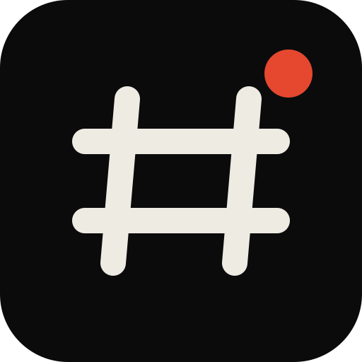

SLACK MCP / THE RECEIPTS CUTSIMULATED WORKSPACE · SHIPPED TOOLS
00:00
Monday / 09:07 / laptop barely open
What blew up overnight?
slack_conversations_unreads / complete
Most notifications
are not news.
47
The useful part / with receipts
The database fell over. Kai picked it up. The runbook lied.
Its automatic failover step was, technically speaking, “a myth.” At 3 AM. Love that energy.
slack_search_messages / five months of workspace history
Five months. Three people. One printer.
printer admin PIN 3rd floor
“The admin PIN for the 3rd floor printer is 4729.”
Write paths / behind the velvet rope
Send nothing weird.
Reads can run. Replies, reactions, and read-state changes stay explicitly gated so the client controls the consequential part.
01 / Reply
Send Lena the printer PIN.
slack_send_message02 / React
Acknowledge Kai’s 3 AM heroics.
slack_add_reaction03 / Clear
Mark the handled channels read.
slack_conversations_markUnder the hood / because sessions rotate
The part that keeps working tomorrow.
The joke stops at credential handling. Extraction, decryption, health, refresh, and storage are a real lifecycle.
Find the session.
LevelDB → xoxc
newest record firstRecover the pair.
SQLite + WAL → xoxd
locked DB snapshotDecrypt locally.
PBKDF2 + AES-128-CBC
no clipboard detourUse 21 tools.
DMs · search · threads
actions · workflows47UNREAD
→1BRIEF / WITH RECEIPTS
→0AFTER APPROVAL
Your Slack / your agent / no permission slip
You ask once. It does the scrolling.
npx -y @jtalk22/slack-mcp --setup
21 Slack tools · any stdio MCP clientNo app registration · no admin queue